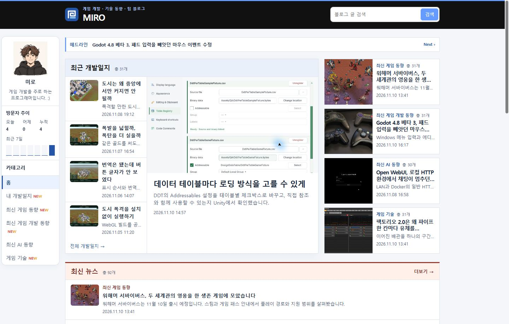
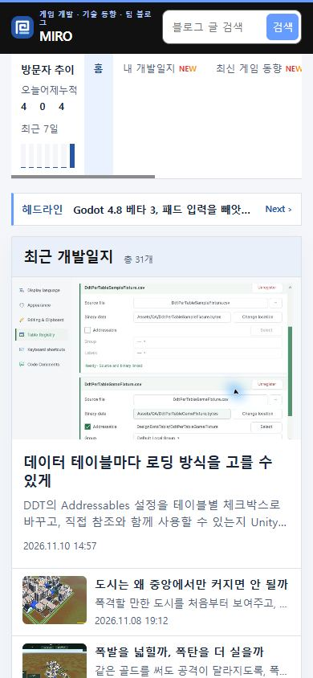
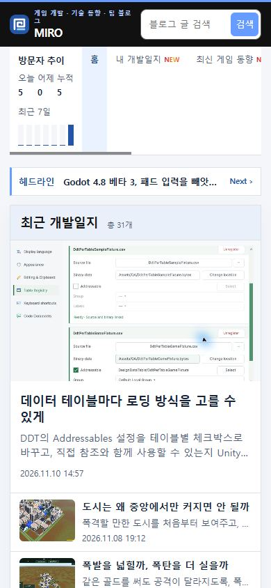

Tracefolio REPORTS & ISSUES
Tracefolio REPORTS & ISSUES문문동준 개발 블로그수정사항
탑바와 모바일 그래프 로딩 공간 확보
완료탑바의 3px 로딩 공간과 모바일 방문자 그래프의 높이를 첫 프레임에 확보했습니다.
작업 결과
공개 홈의 PC와 모바일 새로고침에서 본문 시작 위치가 유지됩니다.
변경 내용
적용 내용
build.mjs의 첫 화면 스크립트에서 로딩 상태를 시작합니다. style.css의 탑바는 3px 공간을 처음부터 포함하며, 모바일 방문자 그래프의 로딩 문구와 그래프가 같은 30px 행을 공유합니다. 탑바 전체 높이는 PC 82px, 모바일 67px입니다.
const root = document.documentElement;
root.dataset.pageLoading = 'pending';
.visitor-summary-chart {
display: grid;
grid-template-rows: 30px;
margin-block-start: 8px;
}
.visitor-summary-chart > * { grid-area: 1 / 1; }
대화 기록
- 사용자 — “뒤늦게 픽셀 밀리는게 보임 미리 공간 잡아놔줘”
- AI — 공개 홈을 새로고침하며 탑바와 본문 위치를 기록했습니다. 탑바 높이 자체는 유지됐으며, 방문자 그래프가 로딩 문구를 대체할 때 모바일 본문이 약 10.2px 내려갔습니다. 두 로딩 영역의 공간을 사전에 확보했습니다.
검증
커밋 0782378을 푸시했습니다. 공개 Chrome에서 1440px과 390px 화면을 각각 새로고침했습니다. 수정 전 모바일 본문 시작은 212.56px에서 222.77px로 바뀌었습니다. 수정 후 모바일은 222.77px, PC는 82px로 첫 관측 프레임부터 방문자 그래프가 표시된 뒤까지 고정됐습니다. 두 화면의 레이아웃 이동 이벤트가 없었습니다. 검증 브라우저에서 외부 광고와 폰트 요청은 제외했습니다.



남은 사항
비동기 영역의 공간 확보와 새로고침 검증을 프로젝트 지침에 추가했습니다. 전역 지침 변경은 없습니다.
작업 시간
- 제안 시간: 약 1분
- 실제로 완료된 시간: 블로그 공개 확인까지 약 3분 18초. 2026-11-10 18:18:46 KST
- XERJ: 미사용 — 코드 검색 근거가 제공되지 않았습니다.